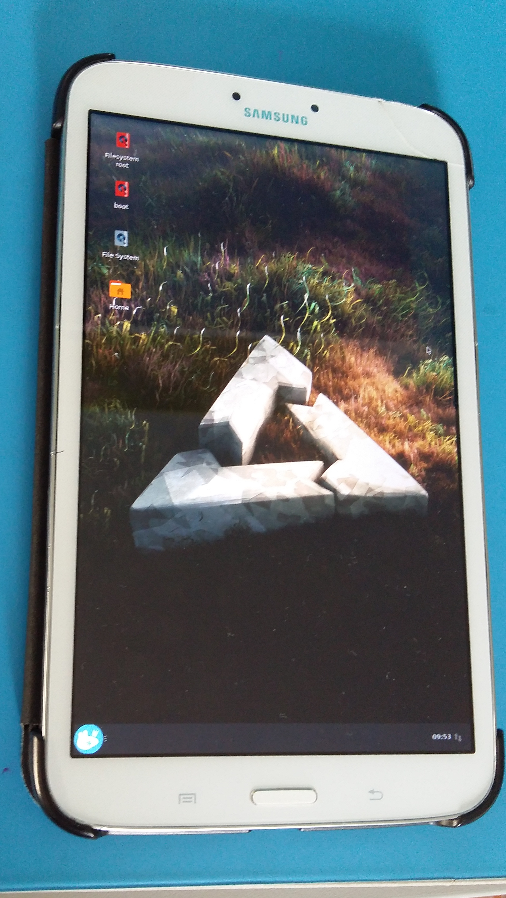

Samsung Galaxy Tab 3 8.0 (SM-T310) (samsung-lt01wifi)
|
 lt01wifi | |
| Manufacturer | Samsung |
|---|---|
| Name | Galaxy Tab 3 8.0 (T310) |
| Codename | samsung-lt01wifi |
| Released | 2013 |
| Category | testing |
| Original software | Android |
| Original version | 4.2.2 |
| Hardware | |
| Chipset | Samsung Exynos 4212 Dual |
| CPU | Dual-core 1.5 GHz Cortex-A9 |
| GPU | Mali-400MP4 |
| Display | 800x1280 |
| Storage | 16GB |
| Memory | 1.5GB |
| Architecture | armv7 |
| Type | tablet |
{kind=link}
| USB Networking |
Works
|
|---|---|
| Flashing |
Works
|
| Touchscreen |
Works
|
| Display |
Works
|
| WiFi |
Works
|
| FDE | |
| Mainline |
Partial
|
| Battery |
Works
|
| 3D Acceleration | |
| Audio |
Broken
|
| Bluetooth |
Broken
|
| Camera |
Broken
|
| GPS | |
| Mobile data |
Unavailable
|
| SMS |
Unavailable
|
| Calls |
Unavailable
|
| USB OTG |
Works
|
| NFC |
Unavailable
|
| Accelerometer | |
|---|---|
| Magnetometer | |
| Ambient Light | |
| Proximity | |
| Hall Effect | |
| Barometer |
Unavailable
|
| Power Sensor |
Unavailable
|
| Camera Flash |
Unavailable
|
|---|---|
| Keyboard |
Unavailable
|
| Touchpad |
Unavailable
|
| USB-A |
Unavailable
|
| HDMI/DP | |
| Ir TX |
Broken
|
| Ir RX |
Unavailable
|
| Stylus |
Unavailable
|
| Haptics |
Unavailable
|
| Ethernet |
Unavailable
|
| FOSS bootloader |
Broken
|
Contributors
knuxfanwin8
Maintainer(s)
knuxfanwin8
Users owning this device
- Knuxfanwin8 (Notes: 2x, mainlined!)
How to enter flash mode
Download mode: VolDown while powering on
Recovery mode: VolUp while powering on
Installation
Boot into download mode (Power+VolDown), then run pmbootstrap flasher flash_rootfs and pmbootstrap flasher flash_kernel.
Notes/To Do
The device uses an Exynos 4212 chipset, which is a dual-core variant of the Exynos 4412.
Only lt01wifi/T310 has been tested so far; T311 and T315 are pretty similar, but have slightly different sensors, and haven't been tested.
XFCE ONLY:The device indicates when it's charging, but the actual battery percentage readings don't work.
Hardware buttons work, they just require triggerhappy on xfce. Back and menu buttons are in /dev/input/event1, home, volume and power buttons are in /dev/input/event0.
Audio should work using these instructions. The tablet uses TAB3_WM1811 as the name.
Parts and mainline status
| WARNING: If the DRM driver crashes (screen gets stuck, lines start to get blurry/dimmer), power off the device immediately as leaving it on WILL (temporarily) damage your display! Usually the damage goes away after anywhere from a few minutes to about half an hour, but it's better to be safe. |
There's a WIP mainline tree on Github: knuxify/tab3-8.0-mainline. See the tab3-6.4-rc2 branch for current work. The patches have nearly all been upstreamed except for the DTS and touchkey patches; they will likely make it into Linux 6.5.
Current issues:
- RAM is limited to 1GB due to some weird quirks in how the later RAM is treated by the downstream kernel
- Backlight forgets settings after suspend, resulting in choppy brightness changes
- Headset mic input doesn't work; jack detection doesn't work
- USB OTG doesn't work (might be true for all similar devices? todo)
- When connecting a mouse over Bluetooth, moving the mouse cursor around in landscape mode will cause the DRM driver to crash ("vblank wait timed out")
For the status of all components, see the tables below:
| Element type | Element | Works? | Notes |
|---|---|---|---|
| Chipset | Exynos 4212 | Y | Used to be in mainline, but was dropped; reimplemented in the linked kernel fork |
| Graphics | Mali-400MP4 | Y | |
| Charging IC | max77693 | Y | Supported in mainline; also handles USB role switching. (Could not get OTG to work yet...) |
| Audio | WM1811 | P | Speaker and headphone jack works (needs UCM config), internal mic works (but peaks - TODO), headset mic does not work. No automatic jack detection. |
| PMIC | S5M8767 | Y | Supported in mainline |
| Fuel gauge | MAX17050 | Y | Supported by MAX17042 driver |
| Touchscreen | MELFAS MMS252 | Y | Pretty much identical to the other Melfas touchscreens in mainline. Using mms114 compatible for now. Both touchscreen and touch keys work (patches for the latter are currently under review). |
| Buttons | gpio-keys | Y | Volume up/down, power and home button. |
| WiFi, Bluetooth | BCM4334 | Y | Driver in mainline. |
| Display | S6D7AA0 LSL080AL02 | Y | Driver in kernel fork. See also: Blog post about getting the display working |
| Camera | Sony ISX012 and Siliconfile SR130PC20 | Both aren't in mainline | |
| Backlight | LP8556TMX | Y | PWM-controlled backlight controller. Seems to have a weird issue where setting it to 100% causes the backlight to shut down (though this is lazily worked around in my fork). Also seems to forget ROM settings after suspend. |
| IR | ABOV (Micom?) MC96FR332AUB | The kernel option is IR_REMOCON_MC96, but REMOCON just seems to be Samsung's designation for remote controllers (given that they use it in part numbers for their TV remotes). The Kconfig description says it's a Micom(ABOV) device. It's an 8-bit microcontroller, programmed with a custom firmware bundled in the kernel as drivers/irda/irda_fw.h. Chip markings say ABOV 332AUB 1427. Also used on the GT-N8000. Official site/datasheet for what seems to be the same model
|
|
| MHL | sii9244 | sii9234 driver seems to initialize fine, can't test because I don't own a dock; currently disabled, since this is the same chip as in the S3 and likely suffers from the same issues (phosh not starting up with dock unplugged) | |
| Modem | XMM6262 (3G), Qualcomm ??? (LTE) | XMM6262 seems to be supported by replicant but isn't yet in mainline; Qualcomm modem might be MDM9615, since that's what the S3 4G uses; didn't check the code to make sure | |
| GPS | BCM47521 | No clue about mainline support, seems to be unsupported |
Sensors
| Element type | Element | Works? | Notes |
|---|---|---|---|
| Hall effect/flip cover sensor | gpio-keys | Y | Simple sensor connected via GPIO. |
| Accelerometer | STMicroelectronics K2DH | Y | Seems to be compatible with LIS2DH12 |
| Magnetometer | YAS532 | P | Enabled in DTS and seems to be detected, but the values don't seem to make much sense? TODO |
WiFi
| Element type | Element | Works? | Notes |
|---|---|---|---|
| Light sensor | CM3323 | Y | Driver in mainline |
3G/LTE
| Element type | Element | Works? | Notes |
|---|---|---|---|
| "Grip sensor"? | AD semiconductor ASP01 | Appears to be a "Capacitive Touch/Proximity Sensor"; datasheet. Not 100% sure what this is used for. | |
| Proximity sensor | CM36653 | Not in mainline; likely similar to CM36651 |